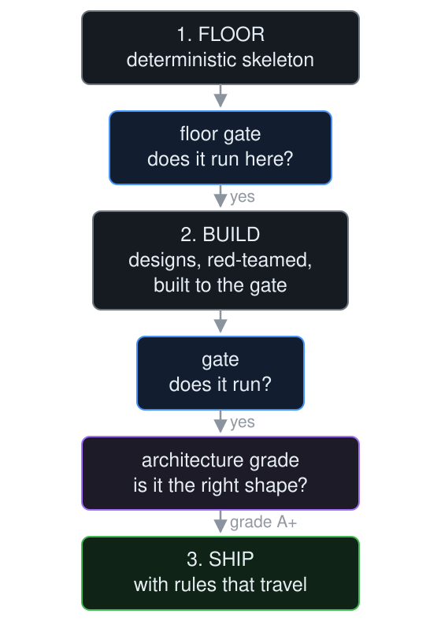
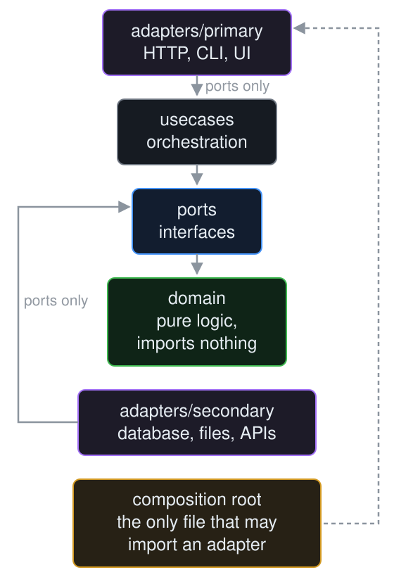
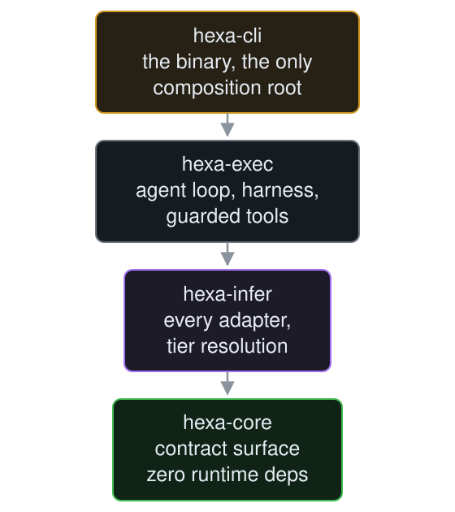
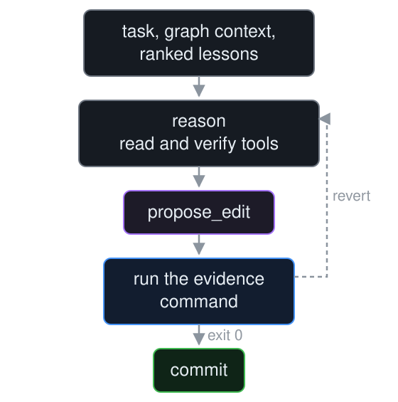

hexa is a scaffolding system that grades the architecture of what it builds. A command that must exit 0, and an architecture grade that must hold. One binary, no daemon, no database.
curl -fsSL https://raw.githubusercontent.com/gaberger/hexa/main/install.sh | bash
$ hexa scaffold "A bookmark service: SQLite store, HTTP API, tag search" \ --target ./myapp --lang rust --grade A ✓ 8 files (rust) — gate: cargo test ✓ floor gate green: cargo test ✓ 2 designs → 2 critiques → build GREEN ✓ gate re-run: PASS — 27 test(s) ran ✓ architecture grade: A+ — score 100/100 (floor A) $ hexa analyze . --grade A --exit-code ✓ 0 violations · 0 cycles · A+
An AI agent produces a working feature in minutes. It also produces features whose tests pass and whose shape is wrong. A use case imports a database driver. A domain type depends on an HTTP client. Nothing fails. The suite is green.
A test suite answers does it run. Nothing in that loop answers is it still the system I designed.
A spec is prose. Prose cannot fail.
Code drifts from a spec in silence, because nothing ever runs the spec. This repository did it to itself: on 2026-09-15, its own decision records were cited across the code and docs, and most of them had no file.
So a spec in hexa isn't prose. A decision record is compiled to given/when/then scenarios by a model that sees the decision and its ports, never the code. A person accepts them. Each becomes a sealed test that must fail before the code exists, and no agent commit may edit it.
$ hexa spec draft <ADR> # scenarios from the ADR and its ports alone $ hexa spec accept <ADR> # a person accepts what "correct" will mean $ hexa spec tests <ADR> --crate <dir> # one test per scenario, each red, sealed $ hexa spec verify --ci # every sealed test, run alone; drift fails
One asks whether it runs. The other asks whether it's still the shape you designed. Work counts only when both hold.
It comes from templates compiled into the binary, byte-identical on every machine, every run. Its gate runs before any model call, because a skeleton that won't build makes everything after it meaningless.
hexa analyze grades the boundaries, and --grade A fails the build when the grade isn't earned or any import crosses a boundary.
Every scaffold ships a .hexa/ADR-rules.toml. It's not a starting point you leave behind; it's the contract the project keeps being measured against.
Decide, gate, build, harden. .hexa/loop.json keeps the ADR, gate, evidence and stage per session. An edit for feature-sized work with no gate is stopped.

Install from the latest release, then hexa bootstrap sets up prerequisites, the inference server and config. hexa self-update keeps it current. It scaffolds Rust, Go and TypeScript.
# the floor alone: deterministic, runnable, # carries its own rules $ hexa init ./myapp --scaffold --lang rust # the floor plus what you described, # gated on the build AND the grade $ hexa scaffold "A bookmark service: SQLite store, HTTP API, tag search" \ --target ./myapp --lang rust --grade A
$ hexa do run "make add() return a + b, not a - b" \ --file src/lib.rs \ --evidence "cargo test --test add"
$ hexa analyze . # grade + violations $ hexa analyze . --grade A # fail below A $ hexa analyze . --grade A --exit-code # …and on any violation $ hexa graph consumers <path> # who depends on this
# adversarial: hunt by lens, verify, fix under the gate $ hexa harden src/domain/merge.rs --gate "cargo test -p mycrate" # cooperative: diverge, red-team, synthesize, build $ hexa build "a bounded work queue" \ --target src/queue --gate "cargo test" # either one, past any terminal or tool timeout $ hexa harden src/ --gate "cargo test" --detach
$ hexa loop adr ADR-2609131800 # the decision $ hexa loop gate "cargo test --test add" # before the code $ hexa loop evidence "cargo test -- --nocapture" $ hexa loop stage done # writes evidence into the ADR $ hexa loop # every session's state $ hexa spend # tokens and dollars
$ hexa doctor # exits non-zero when a check fails $ hexa go # the next right thing $ hexa --version # the commit it was built from

"Good separation of concerns" can't be graded. This can. Every arrow points inward, and hexa analyze walks the AST to check it.
domain/ imports only domain/ports/ imports domain/ onlyusecases/ imports domain/ + ports/ onlyports/, never the domain directly; a primary adapter may also call usecases/Rule 4 is the one implementations break. An adapter gets domain types because the port re-exports them, so every adapter has exactly one edge into the core, and swapping a database means touching one file. A linter says a line is ugly; these say a dependency is wrong.
In a statically typed language a wrong shape fails in seconds, before any test runs. And hexa analyze needs imports that are explicit and resolvable at build time. Duck typing and runtime loading make boundaries invisible, so the second gate couldn't exist.
The strictest gate. crate::, self::, super:: and inline paths, even inside macros, are all read.
Module paths from go.mod decide what's inside the project. Strict, and weaker models fail it.
The most forgiving of the three. tsconfig aliases, require() and import() are all graded.
The cost is real: strictness makes the gate stronger and the task harder. A gate a model can't pass is doing its job.
Every gate re-run independently from a clean build. The tests were broken on purpose to prove they can fail; a passing test proves nothing until you've watched it fail.
Real I/O: HTTP, SQLite, a migration, 12 end-to-end tests against a live port.
The gate was broken five ways and failed each time.
A+ on the architecture grade.
Pure logic, no I/O, from one sentence.
hexa harden found three bugs behind fourteen passing tests.
A perfect minimax player.
Ten single-token bugs injected into a 1,685-file project. Each repaired to the original line exactly, zero test files edited.
Every boundary violation found, plus five more. A typed ports layer added, no logic changed, all 177 tests green.
An overflow in a rate limiter that silently limited nothing. All 14 tests passed. Only an adversary reading the code found it.
Every number has a command that checks it in docs/EVIDENCE.md.
Same task, per model, pass rate. The top-of-the-leaderboard local model scored last here, so leaderboard rank doesn't predict performance in the agent loop. Measure your own with hexa bench agentic.
| Model | Rust | TypeScript | Go |
|---|---|---|---|
| devstral-small-2:24b | |||
| gemma3:12b | |||
| qwen2.5-coder:14b | |||
| gpt-oss:20b |
hexa runs each candidate model in turn and commits the first whose edit passes the gate.
Seven crates, one binary. Every source file in a layer, every import between crates checked, super:: and inline Rust paths included. A ratchet test fails on any new violation.
The map is in ARCHITECTURE.md. The decisions are in the append-only ADR ledger.


The agent reasons with graph context and ranked lessons, reads and verifies with guarded tools, proposes an edit, and runs the evidence command. Exit 0 commits. Anything else reverts.
hexa contributes the deterministic floor, the gates, the grade and the adversary. It doesn't do the writing. It turns a capable model into a disciplined one.
Small apps, sealed, served from your own machine.
Given a rule, hexa finds every file that breaks it. Given only a failing test name, it found the right file once in ten.
The refactoring trial ran through hexa build with the analyzer as its gate. That worked, and it isn't a verb yet.
Code generated by a macro from an allowed crate, reflection, and FFI remain unseen. Runtime-built module names are warned, not skipped.
hexa doesn't replace the model. Local models have a language-dependent ceiling, and Rust and Go are where weaker ones fail.
One binary. Rust, Go and TypeScript. MIT licensed.
curl -fsSL https://raw.githubusercontent.com/gaberger/hexa/main/install.sh | bash